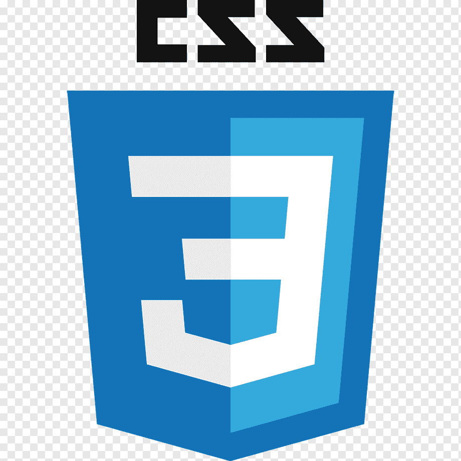
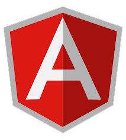

КЛИЕНТСКАЯ ЧАСТЬ
HTML

HTML5 — (англ. Hypertext Markup Language, version 5)язык для структурирования
и представления содержимого всемирной паутины. Это пятая версия HTML. Хотя стандарт был завершён
рекомендованная версия к спользованию) только в 2014 году. Читать далее.
CSS

CSS — (англ. Cascading Style Sheets — каскадные таблицы стилей) — формальный
язык описания внешнего вида документа, написанного с использованием языка разметки. Используется
как средство описания, оформления внешнего вида веб-страниц, написанных с помощью языка разметки
HTML. Читать палее
Bootsrtap

Bootstrap — свободный набор инструментов для создания сайтов и веб-
приложений. Включает в себя HTML и СSS шаблоны оформления для типографики, веб-форм, кнопок,
меток, блоков навигации и прочих компонентов веб-интерфейса, включая JavaScript-расширения.
Читать далее
AngularJS

AngularJS — JavaScript-фрейморк с открытым исходным кодом. Прелназначен
для разработки одностраничных приложений Его цель — расширение браузерных приложений на
основе MVC шаблона, а также упрощение тестирования и разработки. Читать далее
В настоящее время «Искусственный интеллект» покинул сферу на научно-фантастических технологий и
уверенно вошел в числе 10 лучших трендов веб разработки в 2020 году. Крупные компании, такие
как Facebook, Google, Microsoft, IBM н Amazon, увидели перспективы для инвестиций в развитие
ИИ н сделали все возможное для частичной интеграции технологий искусственного интеллекта на
своих плошадках.